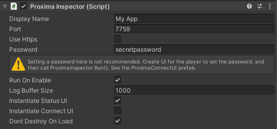
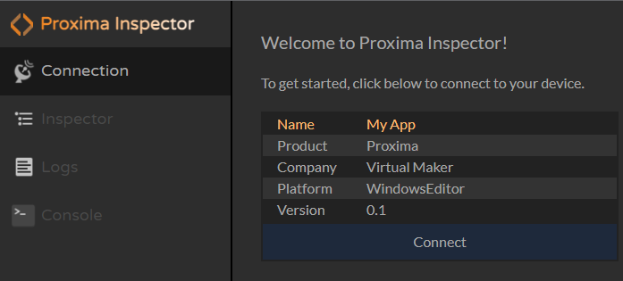

Getting Started
Installation
Feature Overview
Connection
Supported Platforms
Connect to Your Game
Security Considerations
All Configuration Options
Inspector
GameObject Inspector
Adding Buttons
Frequently Asked Questions
Logs
Log Viewer
Viewing Logs Offline
Console
Console Window
Built-in Commands
Custom Commands
Extras
Deep Links
Welcome to Proxima Inspector!
Proxima Inspector lets you connect to your Unity game using a web browser to view game objects, logs, and more. Proxima setup is easy, just follow these steps.Installation
- Import the Proxima package to your project from the Unity Asset Store. How do I import an asset store package?
- Add an empty GameObject to your scene and add a Proxima Inspector component to it.
- Enter a display name (optional).
- Enter a super secret password (required).
Your component should now look like this:
5. Play your game in editor and navigate to http://127.0.0.1:7759. You should see Proxima Inspector pop up.
6. Click Connect and enter your password. Now you can get familiar with Proxima's features while connected to the editor.
When you're ready, learn how to connect to your built game.
© 2023 Virtual Maker Corporation